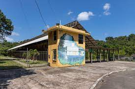
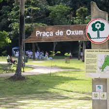
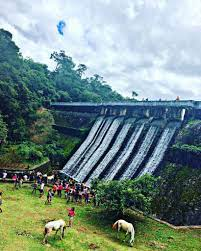

O Parque São Bartolomeu está localizado entre o bairro de Pirajá e a Enseada do Cabrito, no Subúrbio Ferroviário de Salvador. Com grande biodiversidade, abriga quatro cachoeiras, manguezal e a barragem do Rio do Cobre. No entanto, essa riqueza encontra-se vulnerável. A degradação ambiental e social ameaçam a preservação dessa área, na forma de poluição, ocupação irregular e pouca infraestrutura pública (coleta de lixo e saneamento).
Devido à divergência entre as fontes, pode ter sido instituído por meio do decreto municipal de número 4756 de 13 de março de 1975 ou do decreto municipal de número 5363 de 28 de abril de 1978. Os 75 hectares do parque estão situados no território da Área de Proteção Ambiental Bacia do Cobre - São Bartolomeu, que se estende pelo município vizinho de Simões Filho,[6 do Sítio Histórico de Pirajá, de 2.660 hectares, e do Parque Metropolitano de Pirajá, de 1.550 hectares.
Um dos principais pontos da cidade com remanescentes de Mata Atlântica em zona urbana no Brasil, o parque tem valor não só ambiental, como religioso e histórico. É local sagrado, inclusive de culto, para o povo do santo, a exemplo da Praça de Oxum. E foi palco, em 1823, da Batalha de Pirajá, parte da campanha baiana da Guerra da Independência do Brasil.Há também a Mata do Urubu, local onde viveram índios tupinambás e quilombolas (Quilombo dos Urubus).
Em ponto central no encontro das aléias, constitui-se numa das mais belas atrações do jardim. Fabricado na Inglaterra, é constituído por duas bacias. Na maior delas, quatro figuras representam a música, a poesia, a ciência e a arte. O chafariz foi originalmente instalado na Lapa até que, com a reformulação do Passeio Público (1905), foi instalado no jardim.